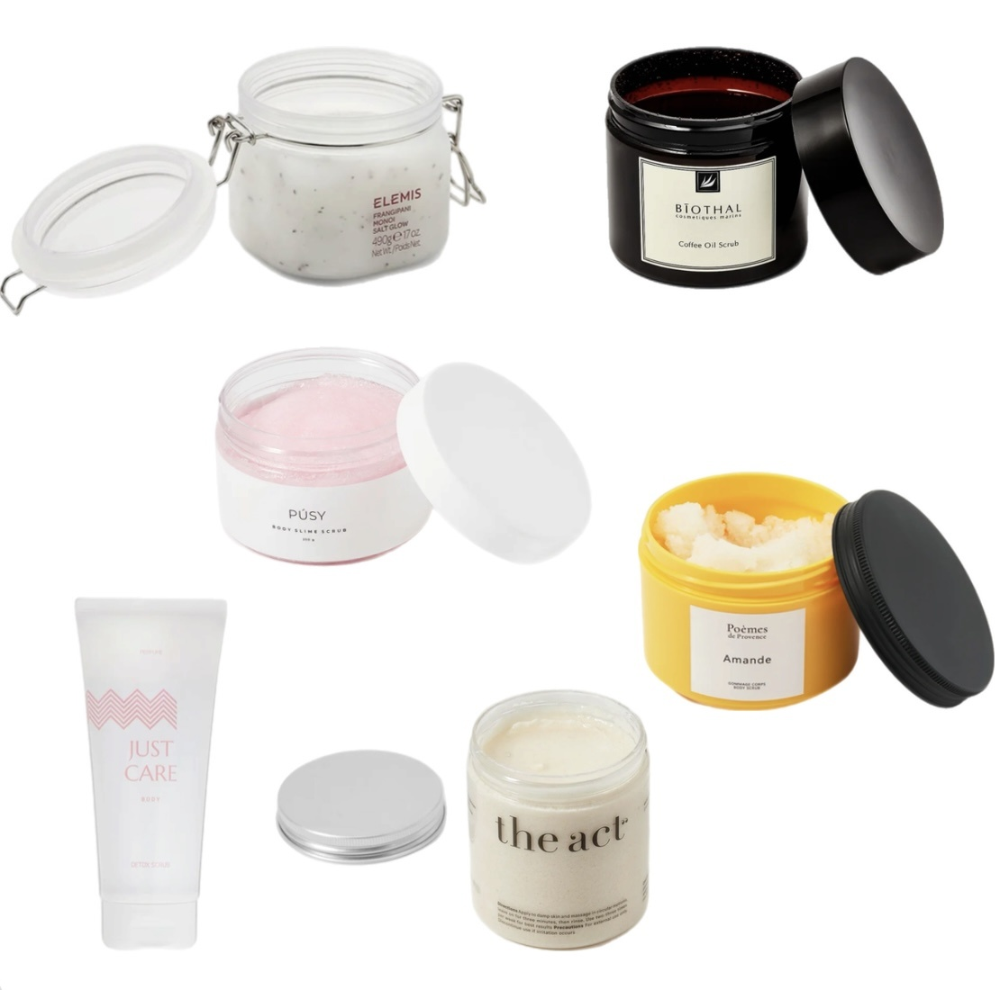

Косметика для чувствительной кожи
Чувствительная кожа лица отличается повышенной реактивностью на внешние и внутренние факторы. Люди с таким типом кожи часто сталкиваются с покраснениями, раздражением, сухостью и зудом. Чтобы избежать неприятных реакций, необходимо подобрать правильный уход. Средства для чувствительной кожи имеют мягкие и деликатные составы без агрессивных компонентов, в том числе этилового спирта...
ЧитатьКосметика для тела, которая должна быть на вашей полочке в ванной
Миллион средств для лица, а про тело мы забываем? Знакомо абсолютно любой девушке, но кожа, ее тонус и внешний вид требуют особого внимания. Пренебрегать этим не стоит, особенно сейчас, когда с таким большим разнообразием косметических средств, этот ритуал может превратиться в приятную spa-процедуру, а ароматы и шлейф, которые они излучают, смогут порадовать не только вас...
ЧитатьМаска для сияния кожи лица
Сияющая кожа лица — один из главных признаков ее здоровья и хорошего состояния. Когда кожа выглядит свежей, ровной и светящейся, это свидетельствует о том, что она получает достаточное питание, увлажнение и защищена от негативных факторов окружающей среды...
ЧитатьУход за кожей тела зимой: что нужно знать
Кожа — самый большой орган человеческого тела. На ее состояние влияет многое: питание, режим сна, двигательная активность и уход. Важно уделять внимание каждому из этих факторов. Но сегодня мы разберем, как лучше ухаживать за кожей тела с помощью косметики, чтобы поддерживать тонус и здоровый вид всю зиму...
Читать7 рекомендаций, чтобы избежать пересушивания и раздражений кожи лица и тела
Холодные сезоны приносят не только радость от буйства красок поздней осени или белой зимней сказки, но и определенные сложности для здоровья и красоты нашей кожи. Потому что низкие температуры, ветер и пересушенный батареями и прочими отопительными приборами воздух в помещениях плохо влияют на состояние нашей кожи...
Читать